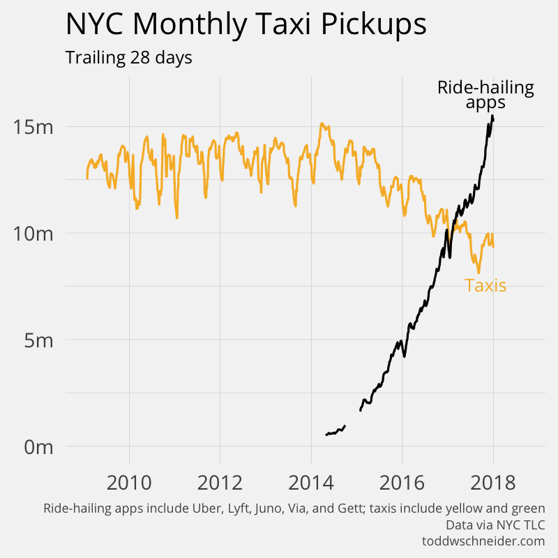
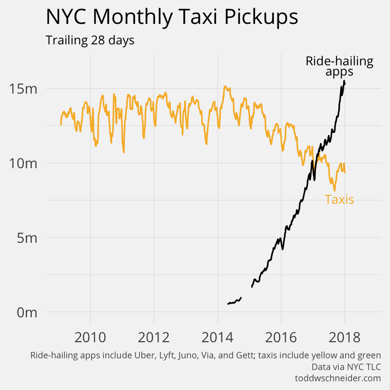

Data is Beautiful showcases graphs, charts, maps and other forms of data visualization. DataIsBeautiful is for visualizations that effectively convey information. Aesthetics are an important part of information visualization, but pretty
pictures are not the aim.
Joe Hellerstein, a computer scientist at the University of California in Berkeley, calls it “the industrial revolution of data”. Data is everywhere. And it is beautiful. Data is changing our lives, re-inventing
online storytelling and influencing pretty much every industry — business, art, entertainment, music, technology.
"So, visualizing information can give us a very quick solution to those kinds of problems. Even when the information is terrible, the visual can be quite beautiful. Often we can get clarity or the answer to a simple question very quickly, like
this one, the recent Icelandic volcano. Which was emitting the most CO2? Was it the planes or the volcano, the grounded planes or the volcano? So we can have a look. We look at the data and we see: Yep, the volcano emitted 150,000 tons; the
grounded planes would have emitted 345,000 if they were in the sky. So essentially, we had our first carbon-neutral volcano.
And that is beautiful." -David McCandless